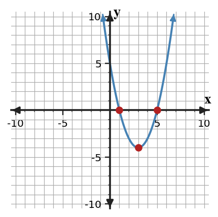
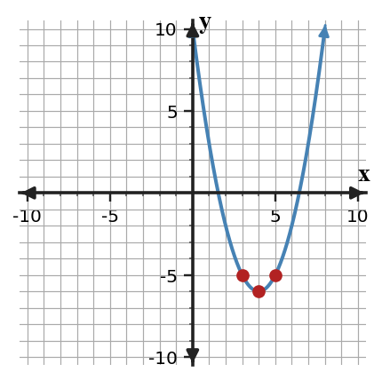

Completing the Square
Mathematical idea: Completing the square rewrites a quadratic so a squared binomial shows the vertex and supports solving.
You will build perfect-square trinomials, rewrite expressions in vertex form, and solve equations by completing the square. You will connect each algebra step to a graph or area model so the added constant has a purpose.
Learning Target
Learning Target: Students will solve quadratic equations by completing the square and connect the process to vertex form.
I can statements
- I can build perfect-square trinomials by adding the needed constant term.
- I can use completing the square to solve quadratic equations and write equivalent vertex-form expressions.
- I can predict how completing the square reveals the vertex and symmetry of a quadratic function.
What's To Come
This is a long-range preview for future lessons. Do not solve it today. Instead, annotate it individually. Circle anything familiar, underline symbols or directions that seem important, and write notes about what information you think will be needed later.
As you annotate, ask yourself: What parts (words, symbols, graphs) do you KNOW? What parts look FAMILIAR? What parts look like jibberish?
Create With Constraints. Create or revise a quadratic task for Completing the Square using the constraints below.
Use the provided graph as one representation. Create a quadratic with vertex $(5,60)$ that opens downward, write it in vertex and standard form, and explain how completing the square connects the two forms.

Intro
Directions
Read the introduction aloud with a partner or in a small group. As you read, annotate the text by highlighting important ideas, circling key vocabulary, and writing short notes about connections, questions, or predictions in the margins.
Completing the square starts by noticing the coefficient of the linear term. For $x^2+bx$, the constant that completes the square is $(b/2)^2$. That new constant turns the expression into a squared binomial.
Standard form is helpful for seeing coefficients, but vertex form highlights a different feature. After completing the square, the vertex and axis of symmetry are easier to see because the expression looks like $(x-h)^2+k$. This makes maximums, minimums, and symmetry more visible.
Solving equations requires balance from one line to the next. If a value is added to one side to create a perfect square, the equation must be adjusted so the solution set stays the same. Otherwise, the new equation describes a different parabola.
This section uses standard form equations, perfect-square trinomials, vertex form expressions, area models, and graphs of parabolas. Each representation shows why the same quadratic can be written in more than one useful way.
Completing the square is especially useful when a context asks for a maximum or minimum. In height or profit models, vertex form can reveal the best input value without needing to test many values.
Stop and Discuss
- How do you choose the constant that completes a square?
- What feature becomes easier to see after rewriting a quadratic in vertex form?
- Why must the same value be balanced when solving by completing the square?
To complete the square for $x^2+bx$, split $b$ in half and square the result.
$$x^2+8x+16=(x+4)^2$$| Expression | Half of $b$ | Add | Perfect square |
|---|---|---|---|
| $x^2+8x+\Box$ | $4$ | $16$ | $(x+4)^2$ |

Context: The added square fills the missing corner of the area model so the whole diagram becomes one square.
Example 1: Build Perfect Squares
An algebra tile mat is missing the corner pieces needed to make a square. Complete each expression.
- Find the missing constant in $x^2+12x+\Box$.
- Find the missing constant in $x^2-14x+\Box$.
- Explain why halving the linear coefficient comes before squaring.
You Try It 1: Complete New Squares
A second tile mat has a different middle strip. Complete each expression.
- Find the missing constant in $x^2+10x+\Box$.
- Find the missing constant in $x^2-18x+\Box$.
- Explain how the sign of $b$ affects the squared binomial.
Stop and Discuss
- How did the missing constant create a perfect-square trinomial?
After a perfect square is created, take square roots to solve the equation.
$$x^2-6x-7=0$$ $$x^2-6x=7$$ $$x^2-6x+9=16$$ $$(x-3)^2=16$$
Context: The graph shows the same solutions as the square-root step because the solutions occur where the output is zero.
Example 2: Solve by Completing the Square
A quadratic equation cannot be factored quickly. Solve $x^2+6x-16=0$ by completing the square.
- Move the constant term and identify the value to add.
- Rewrite the left side as a squared binomial.
- Solve with square roots and explain why there are two solutions.
You Try It 2: Solve Another Equation by Completing the Square
Solve $x^2-4x-12=0$ by completing the square.
- Move the constant term and identify the value to add.
- Rewrite the equation using a squared binomial.
- Solve and explain how to check one solution.
Stop and Discuss
- What part of the completed-square form made square roots possible?
Vertex form shows the turning point and the axis of symmetry.
$$y=x^2-8x+10$$ $$y=(x-4)^2-6$$| $x$ | 3 | 4 | 5 |
|---|---|---|---|
| $y$ | -5 | -6 | -5 |

Context: If $y$ is profit, the vertex gives the input where profit is least or greatest, depending on the direction the parabola opens.
Example 3: Rewrite to Vertex Form
A profit model is $P(x)=x^2-12x+20$. The manager wants to see the turning point clearly.
- Complete the square to rewrite the model in vertex form.
- Name the vertex.
- Explain what the vertex tells you about the graph.
You Try It 3: Rewrite a Height Model
A height model is $h(t)=t^2-8t+7$. Rewrite it to reveal the turning point.
- Complete the square to write the model in vertex form.
- Name the vertex.
- Explain why the vertex form makes the axis of symmetry easier to see.
Stop and Discuss
- How does vertex form show symmetry differently than standard form?
Example 4: Find a Table Mismatch
The table is supposed to match $y=x^2+6x+9$.
| $x$ | -4 | -3 | -2 | -1 |
|---|---|---|---|---|
| $y$ | 1 | 0 | 2 | 4 |
- Evaluate the rule for each input until you find the first incorrect value.
- Correct the table value.
- Explain how the perfect-square form helps you check the table.
You Try It 4: Correct a Values Table
The table is supposed to match $y=x^2-4x+4$.
| $x$ | 0 | 1 | 2 | 3 |
|---|---|---|---|---|
| $y$ | 4 | 1 | 1 | 1 |
- Find the first incorrect table value.
- Revise the table value.
- Use vertex form to justify your correction.
Stop and Discuss
- What made the table error visible: substitution, vertex form, or both?
Summary
Today you used completing the square to rewrite and solve quadratic equations. The method changes a quadratic expression into a squared binomial plus or minus a constant.
The key notation is $(x-h)^2+k$, which shows the vertex $(h,k)$ and the axis of symmetry $x=h$. When solving, the equation must stay balanced as the square is created.
A common error is adding a constant to one side without accounting for it on the other side. That changes the equation and creates wrong solutions.
Strong understanding means you can build the square, solve from the squared form, and explain how the vertex connects to the graph or context.
Common Mistakes
- Squaring before halving. Why it is tempting: the linear coefficient is visible first. What to check instead: use $(b/2)^2$, not $b^2$.
- Forgetting balance. Why it is tempting: adding the constant feels like a rewrite only. What to check instead: keep the equation equivalent on both sides.
- Wrong binomial sign. Why it is tempting: the added constant is positive either way. What to check instead: match the sign of the linear term inside the binomial.
- Calling $k$ the axis of symmetry. Why it is tempting: both numbers appear in vertex form. What to check instead: axis of symmetry is $x=h$.
- Losing the two square-root solutions. Why it is tempting: one square root answer is quicker. What to check instead: remember $u^2=c$ gives $u=\pm\sqrt{c}$ when $c\gt0$.
Optional Future Task Reflection
Look back at the future task. Do not solve it yet. Highlight one part that makes more sense now than it did at the beginning. Circle one part that still feels unfamiliar. Write one sentence about what representation you would look at first.
Find the constant that completes each square.
- $x^2+8x+\Box$
- $x^2-10x+\Box$
Solve or interpret the quadratic situation for Completing the Square. Show the algebra that supports your answer.
Solve $x^2+8x-9=0$ by completing the square.
What is one idea about completing the square you understand better now than at the start of class? Write at least one complete sentence.
What is one thing about completing the square you still want to understand or practice? Be specific — name the idea, not just "everything."